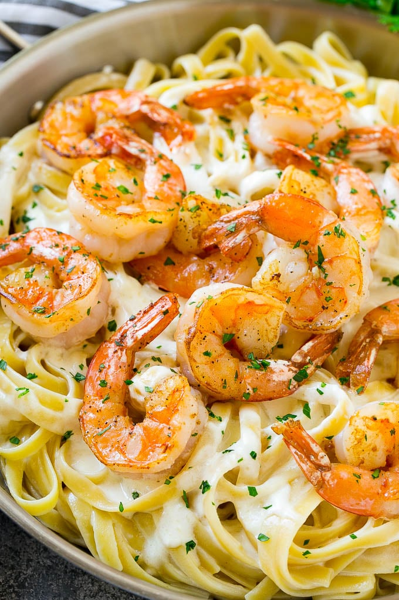

Odin Recipes
Fetuccine Alfredo Recipe

Shrimp Fetuccine Alfredo
Fettuccine alfredo is one of life's greatest comfort foods. It's creamy, cheesy, carb-y,
and super flavorful. The shrimp adds lots of extra flavor and some lean protein to boot!
Ingredients
- Fetuccine
- Shrimp
- Garlic
- Heavy cream
- Freshly greated parmesan
Steps
- Cook fettucine according to the instructions on the box, reserving a cup of pasta water to
thicken the sauce.
- In a large skillet over medium heat, heat 1 tablespoon butter until melted. Add shrimp ,
season with pepper and salt and cook until pink and completely opaque.
- Into the pan, add remaining 2 tablespoons butter and garlic. Cook until the garlic becomes fragrant,
about 1 minute. Whisk in flour and cook until no longer raw, 2 minutes. Stir in heavy cream and milk, then whisk in egg yolk.
Bring to a low simmer and whisk in parmesan. When cheese is melted and sauce has thickened slightly, add cooked pasta and shrimp,
tossing to combine. Season with salt and pepper.
- Garnish with more parmesan and parsley